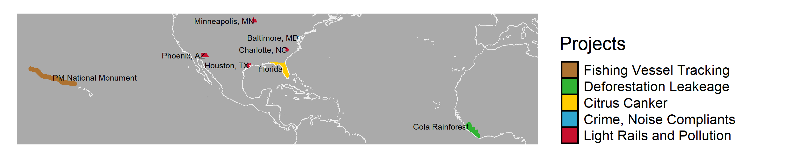

We are a research stream within the University of Maryland’s The First-Year Innovation and Experience (FIRE) program.
What do we do?
Recent advances in computing and data availability have allowed researchers to draw conclusions linking environmental factors to social outcomes, and as such, we strive to understand the socioeconomic consequences of climate change and environmental regulations. We conduct impact assessments using methodology from environmental studies, data science, and economics.
The map below displays the areas in which the stream has been studying. We cover a wide range of topics that impact a large geographical range.

Why does it matter?
The degrading environment is one of humanity’s most urgent problems. Policies or actions can have intended and unintended consequences. By studying the impact of past environmental phenomena and regulations, we can help inform policymakers to make better decisions in the future.
What do we learn?
The stream tailors R programming to students of all skill levels: from basic to cutting-edge applications. Every student learns how to program in R in order to query large quantities of data, clean and combine environmental and socioeconomic data, visualize data in the form of graphs and maps, and use regression analysis to identify causal relationships.
Throughout their experience in the program, students develop an understanding of environmental policies, the intended and unintended consequences, and the impacts on demographics. From there, they learn to communicate their research outcomes to audiences with varying technical backgrounds.